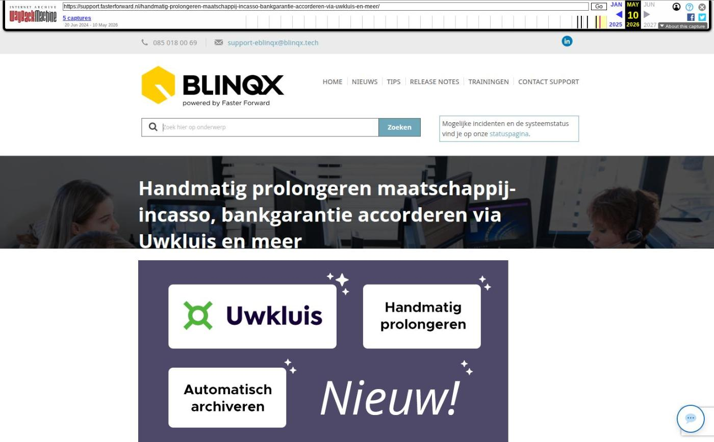

Handmatig prolongeren maatschappij-incasso, bankgarantie accorderen via Uwkluis en meer

Tekstinhoud
Op dinsdag 19 maart zijn Elements en eBlinqx weer verbeterd en uitgebreid met nieuwe features. Deze release bevat onder andere handmatig prolongeren voor maatschappij-incasso en producten automatisch archiveren.
Maatschappij-incasso handmatig prolongeren
Product na beëindigen automatisch archiveren
Verbeteringen Uwkluis
Bankgarantie (BNP) accorderen via Uwkluis
Zelf kiezen waar je ondertekent
Overige verbeterpunten
Maatschappij-incasso handmatig prolongeren
Vanaf nu is het mogelijk om, naast TP-incasso, ook maatschappij-incasso handmatig te prolongeren. Dit wanneer je werkt met ADN 3.0 en mutatievoorstellen. In het product kan je aangeven of dit product handmatig prolongeert. De handmatig geprolongeerde polissen komen automatisch, mits laatste prolongatiedatum is gevuld en niet langer dan een premietermijn geleden is, in de module Handmatig prolongeren – tabblad Maatschappij incasso te staan. Vanuit daar kan je de gewenste posten selecteren en hiervan een batch aanmaken. Deze batch komt te staan in de ADN module. Vanuit de ADN module kan je de batch verder (financieel) verwerken. Het is zelfs mogelijk om direct vanuit de batch de premieopbouw aan te passen of de polis te royeren. Zo kan je per prolongatieperiode de polis bijwerken, ondanks dat er geen bericht van de maatschappij via ADN binnenkomt. Hier lees je er meer over.
Product na beëindigen automatisch archiveren
Vanaf nu wordt vier weken na het beëindigen van een geheel pakket deze automatisch gearchiveerd. Zo blijven de dossiers netjes up-to-date en komt het de performance ten goede. Het betreft beëindigde producten, waarvan de productstatus hoort bij de offertesysteemstatus 'Beëindigd' (rood icoon). In het product wordt een melding getoond wanneer het product automatisch wordt gearchiveerd.
Wil je niet dat het product automatisch wordt gearchiveerd? Dan kan je vanuit de melding het automatisch archiveren voor dit product niet uit laten voeren. De melding zal dan verdwijnen. Als je het product een andere status geeft die niet gekoppeld is aan de offertesysteemstatus 'Beëindigd' dan zal het product ook niet automatisch gearchiveerd worden.
Producten die nu een status hebben die hoort bij de offertesysteemstatus 'Beëindigd' worden door ons allemaal automatisch gearchiveerd. Hierbij verschijnt niet de melding. Het kan dus zijn dat je in de dossiers minder producten ziet. Deze zijn niet verwijderd, maar staan onder gearchiveerde producten.
Verbeteringen Uwkluis
Bankgarantie (BNP) accorderen via Uwkluis
Het is nu mogelijk om bij BNP een bankgarantie te accorderen via Uwkluis. Onder het hypotheekproduct – tabblad Bankgarantie geef je aan dat je de bankgarantie wilt aanvragen bij BNP. Vervolgens wordt er een PDF aangemaakt met daarin een samenvatting van de aanvraag, de algemene voorwaarden en de verzekeringskaart garantiestellingen. Dit PDF-bestand komt als ondertekenverzoek in Uwkluis te staan, zodat de klant deze kan ondertekenen in Uwkluis. Zodra het bestand is ondertekend, ontvangt de adviseur hiervan een taak. Ook wordt de aanvraag automatisch verstuurd naar BNP.
Zelf kiezen waar je ondertekent
Vanaf nu kan de klant zelf kiezen waar hij zijn digitale handtekening zet bij het onderteken van documenten via Uwkluis. Voorheen werd de handtekening standaard op een vaste plek toegevoegd. Nu kan men zelf bepalen waar de handtekening komt te staan.
Overige verbeterpunten
De rapportage CRM – Verzekeringsportefeuille is uitgebreid met de kolom 'Inkoop via'. De rapportage CRM – Contracten is uitgebreid met de kolom 'Bronvermelding'. De rapportage Beheer – Overzicht gebruikers is uitgebreid met de kolom 'Beheerder'. Wil je deze kolommen zien, zet ze dan aan in Rapportagebeheer
Als een persoon is overleden wil je deze niet in (nieuwe) producten selecteren. Om dit te voorkomen is het nu niet meer mogelijk om een overleden persoon rechts in de productkaart te selecteren als bijvoorbeeld premiebetaler
Het veld premiebetaler is nu een verplicht veld in de productkaart van een levensverzekering. Is dit veld niet gevuld dan is het niet mogelijk de TP incasso posten in de ADN batch juist weg te boeken. Nu dit veld verplicht is, wordt dit voorkomen. Ook is de term 'Aanvrager' in dit veld aangepast naar 'Contactpersoon'
In sommige gevallen werden er posten in een ADN batch wel getoond onder het tabblad Posten, maar niet onder het tabblad 'Controlelijst'. Vanaf nu worden deze posten ook getoond in de controlelijst
De definitie van lopende producten in het Financieel Overzicht is aangepast. Hierdoor wordt het juist aantal lopende producten getoond in het overzicht
Het is mogelijk om via de workflow een schadeformulier op te vragen via Finly. Vanaf nu wordt het ingevulde schadeformulier gekoppeld aan de schademelding. Deze komt te staan onder Schademelding – tabblad Documenten in plaats van onder het dossier tabblad Documenten
Wanneer je nu via het dashboard dossiers opzoekt, wordt er automatisch gezocht naar dossiers met een status die vallen onder de dossiersysteemstatus 'Nieuw en Lopend'. Zo worden de dossiers die vallen onder dossiersysteemstatus 'Beeindigd' uitgesloten wat de performance ten goede komt. Indien je op een specifieke dossierstatus of dossiersysteemstatus 'Beëindigd' wilt zoeken dan pas je eenvoudig het filter Dossierstatus aan
Geplaatst op 15 maart 2024 (Laatste update: 20 maart 2024)
Laatste 5 releasenotes
Nog meer data en documenten vergelijken »
Gemakkelijk data en documenten vergelijken »
Verbeteringen boekhouding en facturatie »
Verbeteringen gespreksopname en onder de motorkap »
Verbeteringen onder de motorkap en gespreksopnames »